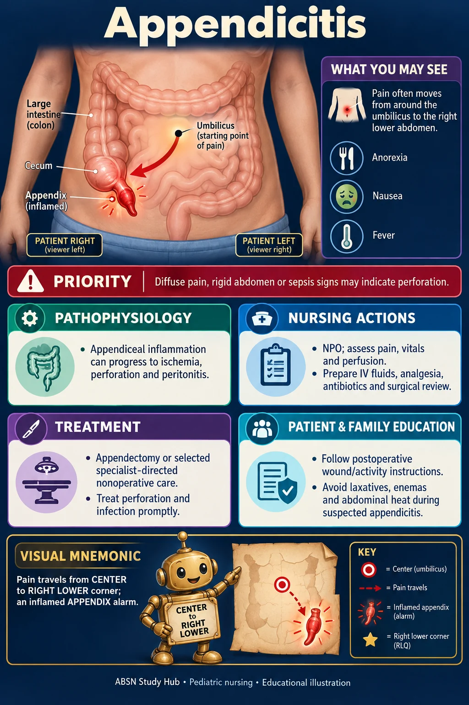

A patient with suspected appendicitis reports increasing right lower quadrant pain. Which intervention should the nurse avoid?
Answer
Applying a heating pad to the abdomen
Reasoning
Heat, enemas, and laxatives are contraindicated in appendicitis because they increase circulation and peristalsis, raising the risk of rupture.
Clinical detail
The patient is kept NPO in preparation for possible surgery.
